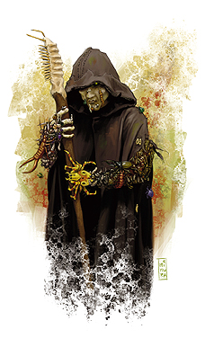

邪恶之书・进阶职业・蛊术师（Vermin Lord）

节肢轻点地面，翅翼微微颤动，蛊术师就这样出现在人们的视野之中。这些常人无法理解的家伙仇视整个世界，只欣赏毒虫的力量。蛊术师奉献出自己的身体，用血肉喂养着毒虫。他们不仅仅容许毒虫在自己身上筑巢，还在它们撕咬自己肉体时感到无比的兴奋。
蛊术师主要由牧师和督依德组成，有些时候，牧师兼游荡者也会选择这条道路。同时，许多怪物角色，如蛛化精灵牧师，也常常会进阶蛊术师。
类人的蛊术师常常同蛛化精灵，相位蜘蛛，或是其他毒虫为伴，他们也有些时候会独自一人行动。但很显然，他们不喜欢任何其他的类人生物。
生命骰：d6
需求：想要成为一名蛊术师，角色必须满足以下条件：
阵营：任意邪恶
技能：躲藏3级，知识（自然）2级，潜行3级
专长：毒虫友好
特殊：角色必须能够施展“巨虫术”。
特殊：角色必须在一名有智慧的昆虫型生物，诸如蛛化精灵，喀嘶魔，奇鲁魔，变型蛛，狩魔蛛，相位蜘蛛，邪恶的弗米蚁或是其他类似生物的帮助下进阶。自然，此类生物通常会要求不低的回报。
本职技能：唬骗（魅力），攀爬（力量），专注（体质），躲藏（敏捷），知识（自然）（智力），聆听（感知），潜行（敏捷），表演（魅力），扒窃（敏捷），搜索（智力），法术辨识（智力），侦察（感知）
每等级技能点数：4+智力调整值
表5-13 蛊术师
等级 基础攻击加值 坚韧豁免 反射豁免 意志豁免 特殊 魔法
1 +0 +0 +0 +2 角质甲壳+1，毒虫仆役 1HD 施法者等级+1
2 +1 +0 +0 +3 吸血大法 --
3 +1 +1 +1 +3 蛛手术 施法者等级+1
4 +2 +1 +1 +4 角质甲壳+2，毒虫护甲 --
5 +2 +1 +1 +4 毒虫之翼，毒虫仆役 4HD 施法者等级+1
6 +3 +2 +2 +5 蛛足术 --
7 +3 +2 +2 +5 角质甲壳+3，喷吐毒虫 施法者等级+1
8 +4 +2 +2 +6 蛊毒 --
9 +4 +3 +3 +6 毒虫仆役 16HD 施法者等级+1
10 +5 +3 +3 +7 角质甲壳+4，母巢 施法者等级+1
职业特性：
擅长武器及防具：蛊术师不擅长任何武器，防具以及盾牌。
魔法：当蛊术师达到1级，3级，5级，7级，9级和10级时，每日法术数量会增加，就像之前的施法职业一样，但不能获得之前施法职业等级的其它能力（如：增进驱散或斥喝不死生物能力、超魔或制造物品专长等）。角色的蛊术师等级加上所具备的其它施法职业等级，决定其每日法术数量、可知法术与施法者等级。举例而言，8级法师昔利凯进阶蛊术师，则他获得新法术的数量如同9级法师，但在攻击加值与豁免加值等其它特性则沿用蛊术师的升级规定。若他下次升级时选择将法师升级，即成为9级法师／1级蛊术师，他获得的法术数量与施法者等级如同10级法士。
若角色在成为蛊术师前拥有多个施法职业，则必须选择要将此升级的蛊术师等级加在哪一种施法职业上，以决定新的每日法术数量。
角质甲壳（EX）：从1级开始，蛊术师的皮肤逐渐角质化，角色获得+1的天然防护等级。之后角色每提高3级，天然防护等级也随之提高+1。
毒虫仆役：从1级开始，蛊术师获得一名1HD的毒虫仆役，视作魔宠。毒虫仆役的智力按魔宠的有关规定处理，生物种类视为魔法兽（参见玩家手册第三章有关魔宠的规定）。毒虫仆役可与角色之前拥有的魔宠并存。
随着蛊术师级别的提高，角色更能够获得额外的毒虫仆役。在角色达到5级时，可获得一名4HD的毒虫，在角色达到9级时，可再获得一名16HD的毒虫作为仆役。
吸血大法（SU）：2级以上的蛊术师可以任意生长出昆虫般的喙部。角色可以利用自己的喙进行撕咬攻击，造成1点伤害。角色也可以尝试用喙进行擒抱，并且不会引发借机攻击。若角色擒抱成功，则可以通过喙部吮吸对方的血液，自动造成每轮2d6点伤害。吸血大法的目标必须是活物。
蛛手术（SP）：每日一次，3级以上的蛊术师可以施展如同法术“蛛手术”的效果，施法者等级相当于角色的有效施法者等级。
毒虫护甲（SU）：当每日4级以上的蛊术师获得法术时，会自动召唤蜘蛛，蝎子以及类似毒虫覆盖在自己身体表面。这些毒虫能够每次吸收10点伤害（物理攻击或魔法攻击），并在吸收伤害后自动死亡。毒虫护甲能够吸收的伤害总量等于蛊术师等级的五倍。例如，一名7级蛊术师的毒虫护甲可以吸收总量为35点的伤害，但在对抗任意一次攻击时最多只能吸收10点伤害。若蛊术师穿着防具，则毒虫护甲无效。
毒虫翅翼（SU）：每日一次，5级以上的蛊术师可以生长出昆虫般翅翼，以陆行速度飞行一小时，灵活性一般。蛊术师的负重能力不变，但过高的负载将会减慢蛊术师的速度，如同陆行。蛊术师在飞行时不能尝试潜行。
蛛足术（SP）：每日一次，6级以上的蛊术师可以施展如同法术“蛛足术”的效果，施法者等级相当于角色的有效施法者等级。
喷吐毒虫（SP）：每日一次，7级以上的蛊术师可以从嘴中喷吐出大群毒虫，覆盖30尺锥形范围。在攻击范围内的所有生物承受每蛊术师等级1d6点的伤害（反射检定伤害减半，DC 10+蛊术师等级+蛊术师魅力调整值）。接下来，喷吐出的毒虫视为法术“飞虫走兽”的效果，施法者等级相当于蛊术师等级，并听从蛊术师的指挥。
蛊毒（EX）：8级以上的蛊术师喙部附有毒素，每次成功的撕咬攻击可以造成1点力量伤害，1分钟后再继续追加1点力量伤害。忽略伤害的坚韧检定DC等于10+蛊术师等级+蛊术师的魅力调整值。
母巢（SU）：当蛊术师达到10级后，可以建造母巢（参见本书第二章，母巢）。母巢必须包括蛊术师本人，但视作独立的个体存在，而且，蛊术师的智力和魅力也不受影响。母巢完全由蛊术师控制，因此，角色获得洞察奖励，并且能够获得母巢的施法能力（若个体数目足够多）。蛊术师的毒虫仆役也可以作为个体参与母巢。